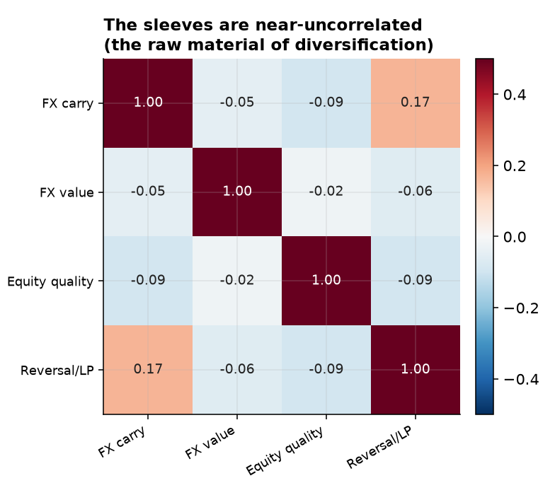
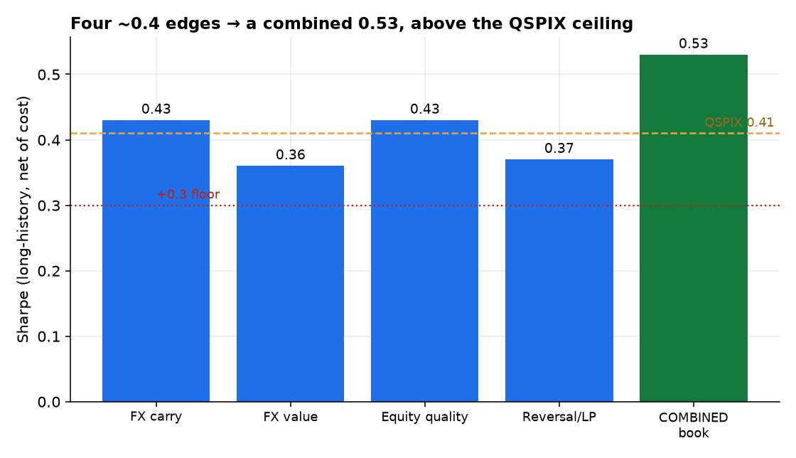
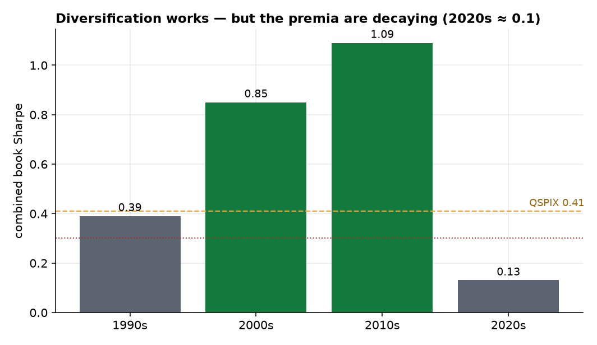

The first six papers found that the durable edges are modest risk premia — each around a 0.4 Sharpe net of costs, none a standalone trade. This synthesis asks the question that matters for actually deploying capital: do they add up? We combine the long-history survivors — FX carry, FX value, equity quality (profitability), and short-term reversal / liquidity provision — into one inverse-volatility, vol-targeted, no-look-ahead book. The answer is a qualified yes. The four sleeves are near-perfectly uncorrelated (all pairwise |ρ| < 0.2), so risk-parity diversification lifts an average sleeve Sharpe of 0.40 to a combined 0.53 — a 1.33× diversification gain that clears the ~0.41 net Sharpe of AQR's live multi-style fund and beats every individual sleeve. Diversification, as advertised, is the closest thing to a free lunch. But two caveats temper it. The premia have collectively decayed — the book's Sharpe ran 0.85 (2000s) and 1.09 (2010s) but only 0.13 in the 2020s — and adding the crypto sleeves over their short 2023–2026 overlap (where the equity factors were negative) drags a thin-sample book to −0.16. The honest forward expectation is therefore not the historical 0.53 but something more like 0.3–0.5, fading. This is the program's bottom line: a small, rigorous participant can assemble a diversified book of genuine, modest, decaying risk premia that beats a cash-plus-floor benchmark — not the double-digit Sharpes of the backtests, which were, every one, artifacts.
Across six papers a consistent picture emerged: a handful of genuine edges, all modest risk premia clustered around a 0.4 Sharpe, surrounded by a much larger set of illusions. A 0.4-Sharpe sleeve is not, on its own, worth trading for a small participant — the drawdowns are too deep relative to the return. The classical resolution is diversification: combine many uncorrelated modest premia and the portfolio Sharpe scales up even though no single sleeve improves [1][2]. This is the entire premise of multi-style funds like AQR's QSPIX. So we test it directly on our own survivors:
The sleeves are the net-of-cost long-short return series from Papers 1–6: FX carry and FX value (G10, monthly, from Paper 6); equity quality (Fama–French RMW) and short-term reversal / liquidity provision (Fama–French ST_Rev, the Paper-5 premium) — the four with long histories — plus crypto funding carry (Paper 2) and crypto trend (Paper 4) for a recent-window extension. All weighting uses trailing volatility lagged one month, so no future information enters a position; the book is rebalanced monthly and charged a small overlay cost on weight changes.
We use the simplest honest construction: risk parity. Each sleeve is weighted inversely to its trailing 36-month volatility (weights normalized and lagged), so each contributes roughly equal risk; the whole book is then scaled to a 10%/yr volatility target on its own trailing volatility. We deliberately avoid optimizing weights on realized returns — mean-variance optimization on estimated means is the classic overfitting trap, and our whole program argues against trusting in-sample performance. Risk parity needs only the (more stable) covariance structure, and it is what the diversification result should rest on.
The precondition for diversification holds emphatically: every pairwise correlation among the four long-history sleeves is between −0.09 and +0.17 (Figure 1). FX carry, FX value, equity quality, and reversal are essentially statistically independent — they are paid for bearing different risks, so they rise and fall at different times. This is exactly the raw material a portfolio needs.

Combining them delivers the textbook result (Figure 2). The individual sleeves earn 0.36–0.43 (average 0.40); the risk-parity book earns 0.53 — a 1.33× diversification ratio, above every single sleeve and above the ~0.41 a live multi-style fund returns. Nothing here is a strong standalone strategy, yet assembled they clear the bar a real diversified product sets. The free lunch is real.

The qualification is decay (Figure 3). The book's Sharpe by decade ran 0.39 (1990s) → 0.85 (2000s) → 1.09 (2010s) → 0.13 (2020s). The mid-sample numbers are excellent; the current decade is barely above zero — the collective signature of the post-publication and post-financialization decay each earlier paper documented sleeve by sleeve. The crypto-inclusive book makes the point sharper still: over the short 2023–2026 overlap, where FX value, quality, and reversal were all negative and only FX carry (+1.05) and the crypto sleeves (+0.5) were positive, an expected-return-blind risk-parity combine nets −0.16 — too thin and too naive a sample to be a portfolio Sharpe, but a useful reminder that recent realized premia are weak and regime-dependent.

This synthesis closes a seven-paper search for harvestable alpha across crypto, equities, FX, commodities, volatility, and microstructure. The conclusion is neither the triumphant “we found alpha” nor the nihilistic “markets are perfectly efficient.” It is the honest middle:
A small, rigorous participant can assemble a diversified book of genuine but modest risk premia — uncorrelated edges of ~0.4 Sharpe that combine to ~0.5, above a live multi-style benchmark. But the premia are decaying, so the honest forward expectation is ~0.3–0.5 and fading — not the double-digit Sharpes of the backtests, which were, without exception, artifacts of selection, smoothness, stale prices, decay, or cost-blindness.
Three lessons stand. The durable edges are risk premia for providing something — liquidity, insurance, financing — never forecasts of direction, which failed in every market we tested. Diversification is the only real multiplier: no single premium is worth trading alone, but their near-independence is genuine and stacks into a respectable whole. And rigor was the alpha: in paper after paper, the work that paid was not finding a signal but honestly pricing its costs, its decay, and its capacity — the discipline that separated the half-dozen real premia from the hundreds of false ones, and that turned a flattering −1.57 commodity Sharpe, a Sharpe-8 carry artifact, and a 0.41-correlation factor zoo into honest negatives. For a participant without colocation, exchange rebates, or a licensed data moat, that discipline — not a secret signal — is the edge. The modest, diversified, fading book this paper builds is what honest alpha actually looks like.
Equity sleeves use published factors. Quality and reversal are the Fama–French long-shorts (standard, but more frictionless than our own net-of-cost builds); a fully self-built, capacity-aware version would lower their contribution somewhat. Risk parity, not optimization. We deliberately avoid mean-variance optimization (it overfits estimated means); a forward-looking expected-return tilt could help or hurt, and is left out by design. The crypto extension is thin. Forty months is too short for a stable multi-sleeve estimate; the crypto sleeves earn their keep individually (Papers 2, 4) but their portfolio contribution awaits more history. Decay is the real risk. The 2020s Sharpe of 0.13 is the most important number in the paper: a diversified book of decaying premia is still a book of decaying premia, and live deployment should size to the recent, not the historical, regime — and monitor for further erosion. The natural continuation is a live, vol-targeted paper-traded version with capacity and borrow-cost models, tracked forward — the only honest way to learn whether even this modest edge survives contact with the next regime.